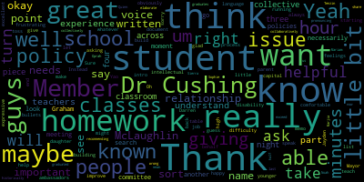

AI-generated transcript of MSC - Student Advisory Council Meeting with Whole Committee
English | español | português | 中国人 | kreyol ayisyen | tiếng việt | ខ្មែរ | русский | عربي | 한국인
Back to all transcripts
[B_or_Ix1ooU_SPEAKER_10]: All right, we should be good to go on YouTube and recording member Graham. So, flourish.
[Graham]: Okay, so welcome to this special meeting of the school committee. The official posting says, please be advised that on November 15th, 2023 at 2.30, there will be a student advisory council meeting of the Medford School Committee held at Medford High School, the superintendent's conference room for students, and then via remote participation on Zoom for everybody else. The Zoom link, if there are folks listening who want to join us, is mps02155-org.zoom.us slash j slash 99174865092. We have an agenda that's been posted for the meeting, so the first item on the agenda is the roll call. Member Ruseau, can you call the roll?
[Ruseau]: Yes, one moment. I have a construction crew in my house, so forgive me for background noise and the need to pop up every now and then. I'm not sure who's here, because I am catching up late, but Member Graham?
[Cabral]: Here.
[Ruseau]: Member Hays?
[Hays]: Here.
[Ruseau]: Member Kreatz? Member McLaughlin? Here. Member Mustone? Absent, I believe. Member Ruseau is present. Mayor Longo?
[Graham]: She'll be along shortly. Thank you. Okay, so four present, three absent. Oh, here comes the mayor. Got a letter in. So we can mark her as present. Just give her a second for her audio to connect. Hi, Mayor, how are you? Hello, everybody. We just did the roll call and we've marked you present. And I was hoping that the next thing that we could do is have the students do some introductions on their end. So we can, just so you know, we can see you all, but it's very hard to see any of you in particular. So I don't know if the camera will move around with you all when you start talking, but if you all could introduce yourselves, that would be great.
[SPEAKER_04]: Hi, my name is Darren Trong and I'm a senior at Medford High School.
[SPEAKER_08]: Hi Darren.
[SPEAKER_02]: Hi, my name is Jaden Phil and I'm representing the sophomore class at Medford High School.
[Lungo-Koehn]: And you said David?
[SPEAKER_02]: Jaden.
[Lungo-Koehn]: Jaden. Thank you.
[SPEAKER_14]: Hello, my name is Noah. I am also a
[McLaughlin]: Dr. Cushing, can I ask you that we just get obviously a list of the students after that will be helpful. Thank you.
[B_or_Ix1ooU_SPEAKER_10]: Absolutely.
[SPEAKER_08]: Hi, my name is Sierra Isbell and I'm from the junior class.
[Lungo-Koehn]: Hello.
[SPEAKER_05]: Hi, my name is Sophie Hook and I'm from the freshman class.
[Lungo-Koehn]: Thank you.
[SPEAKER_12]: Just so you know, we have a few others that couldn't make the meeting today, but we'll let you know obviously who they are at the end of the meeting. So take it away, kids.
[B_or_Ix1ooU_SPEAKER_10]: And so the next item on the agenda, and sorry to usurp Madam Mayor or Member Graham. Go for it. The next item on the agenda is really for students, for you to be able to like, share not like for you to actually share why you're looking to do this work and partnering with district and school leadership as well as the governing body, which is the school committee to really try to help to improve our district and outcomes for students, not just academically, socially, really across the board to improve. of metropolitan schools. And while you represent the high school, you do have experience in our K-8 system as well. So this is the opportunity on the agenda for why you want to do this work.
[SPEAKER_12]: Go ahead Noah, you start us off.
[SPEAKER_14]: Okay, so here we go. I suppose I just feel like I want to make a difference. I feel like there are, I think as a student, there are things that you notice and things that you see that you're like, well, wait, why couldn't we do it like this? Why couldn't we do it this other way? Or why couldn't we try something different? And I feel like it's kind of difficult to do that just like as, as students. So I feel like doing this work is a way to try to improve to try new things and try to improve the school in general and in general school system. Yeah.
[McLaughlin]: That's great, thank you. Dr. Cushing or Mayor?
[Lungo-Koehn]: Yes, Dr. McLaughlin.
[McLaughlin]: Thank you. I don't know if it would make it a little bit more comfortable if maybe we could take turns doing this, right? Instead of just having the students have to do this, maybe we could each take a turn about our why. And then that might be a little bit more helpful and a little bit more relationship building, if that's okay.
[Lungo-Koehn]: Yes, would you like to start us off, Dr. McLaughlin? I was gonna actually suggest you do. Oh, you want me to? Sure, no. why we are having these meetings. Or yeah, your why for running.
[McLaughlin]: Yeah, your why for running, your why you want to improve the school or we want to, you know, whatever you want to say, just a little intro.
[Lungo-Koehn]: OK, I'm initially my why. One of my biggest reasons for why I ran for mayor was safety at the schools back in 2018, 19, before I think any of our time here on the school committee and administration. There was a loaded gun magazine that was found in one of our schools and thrown away by the principal and covered up by the prior superintendent and I was not too happy about that with having children and in the schools myself so that's my why for running four years ago and now why it's important to have these joint meetings and I think member Hays for really pushing this and making this happen. It's because we are here for the students and the faculty, and we want to hear from you, and we want to help bring resolution to your concerns and hear you out. Even if there's things we can't help with, we want to have an honest conversation and do our best. So that's a little bit of mine.
[McLaughlin]: Should we toss it back to the students?
[SPEAKER_04]: So the reason, one of the reasons why I decided to join the student advisory committee, because as a senior at the Mecklen High School, I've experienced it all at high school. I'm very involved with clubs, and I wanted to be part of the process in making sure that school policies and student voices are represented, as I felt that typically, I feel like students are underrepresented when it comes to our voices and school policy decisions, and I wanted to be part of the change in that.
[Lungo-Koehn]: Great, thank you.
[McLaughlin]: Member McLaughlin. Sure, thank you. Thank you guys for being here. I think it's really important just to your point about students having a voice. As a student myself, when I was younger, I didn't really have a voice. I didn't have a parent that could sort of speak on my behalf. And I know how frustrating that was. And also, I have a daughter with intellectual disability and some other high needs. And she has difficulty with expressive language and being able to let her needs known and wants known and feelings known. And I think it's important that we are able to do that and to build relationships and teach people how to do that. And I guess I'm also always asking who's not at the table. Right. So, like, we're here and I'm glad we're here and I'm really happy we're starting this process. And then I want to think about how we're ambassadors for the people who aren't here. and can be able to really help give them some capital as well. Thanks.
[SPEAKER_05]: Okay. I just wanted to get involved in the high school community as I was entering a new school and I hear lots of people talking about their opinions on some of the rules, and I just thought, oh, it would be great if I could really help to make a change.
[Lungo-Koehn]: Great, thank you.
[Graham]: Member Graham? I'll be brief because I'm here to represent you all. That's why I ran for office because the school committee is here to represent the students. So I wanna listen and I will turn it back over to you.
[SPEAKER_08]: I joined the student advisory council committee because I wanted to see change. I think sometimes we all give our frustrations and can point out the issues in our school system, but we can't necessarily create solutions to fix them, or we're just not part of those groups that can proactively deal with those problems. So I wanted to be a part of this committee and hopefully I can make some change.
[Lungo-Koehn]: Wonderful. Member Hays and Member Ruseau, do you want a minute? Sure.
[Hays]: Hi, I'm Sharon Hayes. Unfortunately, this is the only chance I will get to meet with you because I won't be on school committee the next time you meet. But I'm really, really excited that so many of you wanted to do this, and I'm really glad we're getting this going. My reason for really trying to make sure this got started and, you know, I know it had support from administration and all the school committee members, really. But we talk so much about how everything we do is for the students, and we mean that. But what I think we've all realized along the way is that what we really need to hear is what you think you need, because we are older. We've been in high school, but times are different. So we do need to hear from you what's going on, what's going well, what's not going so well, what ideas you have for change. It's just so important to get your voices in. So thank you so much for doing this.
[SPEAKER_02]: I joined the Student Advisory Council because my fellow students and I saw different issues at the school. But yeah, we weren't exactly sure how to articulate those reasons and really bring it up to someone to help it get fixed. And I think with the student advisory council and meeting with the school committee, we can really help make a change in our school because the students, they're like 80% of the school. They're a big part of it. And we want to make sure that as we're going to school, we can make it the best experience it can be. And so if we see problems, we want to be able to help come together and make solutions to fix it.
[Lungo-Koehn]: Great. Member Rossell, do you want to say a few words?
[Ruseau]: Sure, I'll be brief. I, as everybody has already said, I ran because students don't get to vote. So I thought I had a lot to offer and I'm most interested in hearing what you all have to offer actually. So I'm gonna leave it there.
[Lungo-Koehn]: Thank you. Dr. Cushing, feel free to lead the way I know you're there in person and can see who's in their hands and things like that.
[B_or_Ix1ooU_SPEAKER_10]: Absolutely. Thank you, Madam Mayor. I really appreciate it. And so the students working with the school leadership have identified three really primary areas of concern that they would like to see us address. The first is the homework policy. The second are backpacks being carried around the school. And the third is community spirit and support for Medford High School. Um, and so, uh, I leave it to the students to jump in. I know, um, that I rank those in order just as they were given to me, but perhaps backpacks is number one and not number two or however it is. Maybe homework policy is number one.
[SPEAKER_12]: Homework policy is number one.
[B_or_Ix1ooU_SPEAKER_10]: Let's talk about homework.
[SPEAKER_12]: Do you guys want to share the draft that you With Dr pushing so that you can project this for the school committee. Oh, yeah, that would be great. So they came up with a draft about the homework policy. So we have some students who have done remarkable work. And it's only November 15th, so that's pretty amazing.
[Graham]: We can't see who's speaking right now. You're really far away from the camera. It's me.
[SPEAKER_12]: It's Sheila.
[Graham]: Oh, hi.
[SPEAKER_12]: Yeah. Assistant Principal of Engagement and Operations. How are you?
[Graham]: Thank you. Thank you.
[Cabral]: And I'm in the way background, Marta.
[SPEAKER_12]: Hi.
[B_or_Ix1ooU_SPEAKER_10]: So as soon as he comes through, I will Projected, awesome. Sorry, I got a few tabs open. Sorry that's a bit much. Feel free to lead it.
[SPEAKER_04]: So the reason why we decided to address policy is because oftentimes students are engaged in extracurricular activities outside of school and many students feel overwhelmed with the amount of homework being given to them and they feel that the So, I, as well as other students on the committee drafted this policy requests. Um, when we talk about the. Changes we'd like to see to the school handbook regarding the policy. To stress balance school life aspects. And we've incorporated numerous other homeowner policies that we've researched from other school districts, including Somerville, River Public School, Western Public Schools, and other school districts. And we've come to somewhat of a consensus on our draft so far about what changes we'd like to see.
[McLaughlin]: Member McLaughlin. Thank you. Is that the end of the document? Oh, no, there's more on the bullets. Okay, great. Thank you. Yeah. Yeah, I think it's an excellent, very well-written policy memo. Great job, Darren, Jayden, Yao, I'm sorry if I'm pronouncing your name wrong, Mariam, Marjia, Noah, Oprah, Quinn, Sierra, Sophie, Tenzin, and the last name that I cannot see. It's really well-written. I would ask If you could elaborate or share with us a little bit more, I think what I know from my own now graduates experience. for both of my students that have graduated was part of the issue was that the teachers don't understand which classes are giving which homework. And so collaboratively, I mean, collectively, the homework can exceed the 40 minutes or the half an hour or the 20 minutes that you're recommending for each. And so I think that that has been part of the issue historically is that there's not a collective sort of collaboration across the classroom. So if each classroom is giving, you know, say you have six classes in each and you're in all AP, and each of them are giving 30 to 40 minutes of homework a night, then that's, what, three or four hours of homework. So I think that's what the collective piece maybe could be included in there, because maybe people who don't necessarily have that experience don't understand that it's across all classes that is the issue. Am I correct in assuming that that's what you guys are saying, that it can equal up to three or four hours of homework a night if each of the teachers don't necessarily know how much homework is being given?
[B_or_Ix1ooU_SPEAKER_10]: That would be a great assumption. Can I ask the group just a clarifying question? So when you say AP classes should be given at most 40 minutes of homework a night, would that be, if you're taking three AP classes, that would equal three 40-minute blocks or one 40-minute block for the evening?
[SPEAKER_14]: So that would be, as my understanding of it, it's 40 minutes per class. It wouldn't necessarily have to be 40 minutes every single night. And I think a lot of people in AP tests, AP classes can attest, you don't always get homework every single night. More often than not, it's like a balance of doing homework, spacing it out. But just putting some kind of limit on the kind of homework you have to have a single night deadline on, I think would be very helpful for teachers who might not realize how much time it takes to do a given assignment. Awesome. Thank you very much.
[Lungo-Koehn]: Member Graham and then Member McLaughlin.
[Graham]: Thank you. I was wondering if you could tell us a little bit about, it looks like you're recommending changes to some existing policy. Can you tell us where this policy exists?
[SPEAKER_04]: Yes. On page 51 of the Medford High School and both Medford Vocational Technical High School Student Handbook from the 2022 to 2023 school year, it would be the second bullet point.
[Graham]: Okay. Super helpful. As you were talking, I was thinking that I don't, didn't recall we had a homework policy at the school committee level. In fact, we do. And so I think this is, I think this gets confused and I think this will come up again when we talk about backpacks. There are school committee policies And then there are like all the other policies that sit in your handbook that you all look at. And so the way like these things are supposed to work is that the school committee sets out a policy, all the buildings have to comply with that policy. So those policies we try to make them such that they set real high-level policy that then gets interpreted by all the various different levels and schools. So our dress code policy is a good example of that. There might be some things that clarify things for high school students that would be different for elementary school students. So in this case, I think we actually have two pieces of work to do. One is that we have to look at our school committee homework policy, because that has to sort of sit over the top. And then everything that, in the case where there is a policy, anything that's reflected in the school handbook has to be in alignment with what the school committee puts forward as its district-wide policy. In the case where there is no policy in the school committee handbook, in the school committee set of policies, then the superintendent and the principals, right, they are free to set their own policies on everything else that happens in the school. The trick is, or the catch is, that what is supposed to happen once a handbook is created, and of course there's always been a handbook, but on an annual basis, those handbooks are supposed to be modified at the school level by the school site councils. which I think you all are allowed to be a part of. And then they go to the school committee essentially for like a sign off, right? So, and that sign off would look at things like, are we being consistent across both middle schools or are we consistent with our set of policies? So, I think there's actually like maybe a couple of pieces of work here. One is that the school committee needs to revisit its homework policy because we have one. And I can't tell when it was last. updated, but certainly not in four years. And there's been a lot of discussion about homework. So I think at a broad district level, like we have some work that we have to do at that policy level that we would love for you all to be a part of. And we can talk about how that can like come through its process. But then sort of the second step of that is like whatever the homework policy is in your handbook, has to be modified by the site council at the school, and obviously has to line up and then come to us. So, and then, you know, I think about that process, which sounds like really complicated to your point, like there's lots of pieces of that. But I think there's, there'll be a lot of people who will want to weigh in on establishing homework policy, like your teachers. among others, but I think parents as well, especially when you talk about kids of younger grades. So I think there's maybe a couple of steps here, which is one for us to look at your policy that you are suggesting and compare it to what is already our policy, which probably nobody realizes we have because we don't do a great job of that and get our policy sort of squared away in an alignment for K to 12 for the whole district. And then also there's probably some work that Ms. Cabral needs to do with her site council to sort of be more granular about like how to adhere to the spirit of that like overarching policy in a way that is specific to what happens at Medford High, which obviously you all have the most homework of all the grades. And so in the structure of how you learn is just very different than you would in first grade or fifth grade. So there's probably like a couple of pieces here to me that I'm all for it. I'm happy to put forward a resolution that we look at the homework policy. And I would want to do that in a way that you all can join us for those conversations, because I think you've already done some good work, and perhaps there's lots of pieces that we can pull in. But then there's that second piece, which is within the building, you all probably have some work to do, Ms. Cabral, as well. So just some thoughts about homework in general, especially given that we have a policy that we also have to contend with in our overall policy handbook.
[B_or_Ix1ooU_SPEAKER_10]: And just so everyone's aware, I did put that policy in the chat for anyone who wants to pull it in for the students in the room. I can email it to you directly. But all Medford policies, in large part,
[Graham]: But I love it and that you all are bringing forward a suggestion to us because a lot of times people will tell us they don't like something, but telling us how you think we can solve the problem is also super important. So thank you for bringing this forward. Yes, thank you.
[Cabral]: And just to clarify about the school site council, we will be starting that at the beginning Beginning of December, it's already mid November, beginning of December where you will have a seat at the table at that and where we will be discussing primarily starting off the handbook and making adjustments to the handbook that we can then present to school committee. So that would be starting very, very soon with teachers. A community member caregivers and students as well.
[SPEAKER_04]: So we automatically.
[Cabral]: So, we're looking at how we're going to do it as a rotating basis, because we want 5 students at a time there. So, there'll be more logistics of how we can make sure that you all are having a balance as well between. All of the councils that you're on.
[Lungo-Koehn]: Thank you. Yep. Member McLaughlin.
[McLaughlin]: Thank you. I want to apologize. I actually have to go to another meeting in a moment, but I will get an update from my colleagues to the students. But also, if Dr. Cushing or member Graham can put in the chat for the students, the currently outdated school committee policy. So as. Dr. Cushing was mentioning a moment earlier, guys, the school committee policies are on the MPS website and they are searchable by keyboard and a really nice function there too is that you can do comparative to other districts to see what they look like by that search. So, um, if you get a link, um, you'll know how to search our policies. And so to member Graham's point, you know, there's policy is multilayered. Um, so there's a, you know, some pieces of it, but we're really eager to work with you guys. And I think this is a great first step. So forgive me for having to jump off, but I'm at the office and have to go to another meeting. So I look forward to seeing you all again. Bye.
[Lungo-Koehn]: Thank you. Thank you. Member McLaughlin. Yeah, and it looks like the current policy doesn't have time frames for what each teacher would give. So I like that idea of exploring with the teachers, with the admin and the students, if that is the way to solve it. So that's a good first option for us. Yeah, it's quite vague. Yeah, even if the teachers start understanding that this is an issue, potentially start to make change. You know, teachers don't wanna, I'm sure, overwhelm you. So if we could get teachers, even just seeing your proposed policy, maybe it'll get them to really think about the work they're giving and what other teachers on their grade level are giving too, so they can kind of coordinate a bit. So maybe some change could start even before a full policy is drafted. And I just wanted to say that I hear you. I went to Arlington Catholic my first year, and was an athlete, and I switched to Medford High School, and the biggest reason was because I could not keep up with the homework. And in Medford High School, I was able to take the classes, non-AP classes, and I'm sure you're all in APs, but non-AP classes, and be able to manage much better. So I think it's important for our current student body to be able to manage homework and extracurriculars. So thank you. And I know we have about 20 minutes to go, so do you mind Dr. Cushing and student team, if we move on to, I think we're all aware of this backpack policy or school spirit. So whichever one you'd want to take up first.
[B_or_Ix1ooU_SPEAKER_10]: Students who have backpacks, they'd like to get them off their backs.
[SPEAKER_12]: Yes. Or rather back on. Right. Oh, back on. Back on. Back on their backs.
[Lungo-Koehn]: As one member, could we briefly hear from the admin of, I know that's in the policy and why that might be important that they're not on. And then can we hear from students, the counter argument.
[Graham]: And then before we do that, though, can I just I just want to point out, because there's been a lot of questions about whose policy this is. There is no school committee policy that references backpacks. So we so this particular question doesn't have two layers to it. So that's good news, because it's less layers, right? Our school committee policies are silent on backpacks, somewhere along the line. The handbook has some language about what the backpack policy is at Medford High, and if that needs to be changed again like the school committee will sign off and approve those things, but in the absence of a policy at the school committee level. Dr. Edouard-Vincent and her designees like Principal Cabral have the latitude to sort of issue policy directives or procedure directives like this. So obviously at some point we have to review these policies and I actually think we'll talk about that at our next meeting in terms of a timeline there because we have not reviewed uh, handbooks in four years that I've been on the committee. So that is like bad hygiene, like in terms of all of these things continuing to work together well. Um, but I just wanted to make sure that the students knew that there is no school committee policy, that that policy does sit at Medford High, um, just as a jumping off point.
[B_or_Ix1ooU_SPEAKER_10]: And generally, not generally speaking, the only place that the, um, That backpacks is mentioned in the policy is 1 place and it's only given as almost a secondary example. Of responsibilities, but it does not as member Graham said. But I want to speak in a generality of backpacks for for schools and general is. Following numerous school violence incidents, backpacks became a subject of debate and were banned in many schools across the country. Over the ensuing 25 or so years, since the most notable of those school violence incidents, there has been a relaxation on that because the reality is that that's not They're not a conduit necessarily for bad things, but there's this thought process that, you know, it offers clutter to rooms or things along those lines that make it difficult to move around small rooms if there are backpacks in the aisles or various things. Obviously, I'm only speaking in generalities of how backpacks have been seen by school leaders. However, it also does pose significant challenges if in a building the size of Medford High School, about north of a half a million square feet, which is a large building, as you know, being here every day, if your locker is in one location and it's difficult to get to going up and down stairs between classes. As someone who went to high school on a multi-building campus, I never used my backpack, just as a personal example. I'm so, but I think, I mean, I always use my backpack. I never use my block. All right, because the locker was in the most inconvenient location. So, and who had time X minutes between class. So, but generally speaking, that's been the thought process around backpacks. But I think the students probably have a very well worded strong opinion on.
[Cabral]: And I think at my level, it's something that we're all, it's a past practice here and something that we're definitely exploring and have already been collecting data on. I think it's very clear on the student end, but on the teacher end, collecting data on where they stand so that when we do sit down on school site council, and this is something that caregivers have been talking a lot about, we have everything that we've collected the data wise so that we can make an informed policy change.
[Lungo-Koehn]: Got it. Thank you. Students, does anybody want to speak on this? Let us know why you think, you know, why it would be helpful to have a backpack, Emily.
[SPEAKER_08]: So I think one current problem with the backpack policy is that teachers interpret it very differently. So some enforce it very strongly, whereas even tote bags that are like not a certain inches are like immediately set to their lockers or they're written up for it. Whereas others will just let you have your backpack. So that kind of leniency with the rule is making it hard to enforce and then making the pushback even stronger because why do some people get to have backpacks and then I don't and like that sort of thing.
[SPEAKER_14]: So the other thing too is in terms of like classes, workload and paperwork and stuff like that, we have only really like five minutes between periods. to get from one class to three. We've got three minutes between periods to get from class to class. And it's it's a big building. And as depending on what lunch period you have that can mean you have to carry four periods worth of paperwork and binders with you for the beginning half of the day and just carry that all with you between classes which is can be a big strain and pretty pretty irritating. Dimitris, go ahead.
[SPEAKER_04]: Building off of what Noah said, I think the backpack rule really comes into play when you have the three minutes to get to class. And some teachers are very strict with these policies, where if you're late, even by 30 seconds, they will mark you as late. And even though we somewhat get time during lunch to go to our lockers, I don't know if this is a school committee rule or a school policy rule, but technically, after 10 minutes, we're not supposed to be allowed to go to a locker to get materials. And when you factor in long lunch lines and just, like, crowds in the hall, it makes it really difficult to try and get to your locker without getting into, like, trouble by, like, faculty members. So it's just fine.
[Lungo-Koehn]: Thank you. Anybody else? And then I'm going to member Graham, then member Hays. Member Graham.
[Graham]: Thank you. I just wanted to say that I think that all of your questions about why this policy exists are completely rational. And I hope the school council will really take a look at some of those things. My daughter says she's late every day. from one class to another because it's not possible, even without going to a locker, it's not even possible to get from point A to point B unless you're like a star track runner and there's no one in your way, right? So the schedule is a problem. And for the size of building so the size of building isn't going to change just yet. But we are actively working on our scheduling and so hopefully we can be accounting for that as we're working with the scheduling folks who are there to help us figure out like how to make the schedule. more workable between the vocational side of the house and the comprehensive side of the house. So I'm hoping that that also can be taken into account that we can't be marking students late if they can't physically get from point A to point B on time. But I think to the larger point of inconsistency, I would encourage you all to ask how your principal, how to let her and her team know about these inconsistencies. Because when you're talking about 150 adults in the building, I don't think anyone's got it out for anybody, but 150 humans will make 150 different decisions without the right guidance about what to do when various things happen. I think the question, you know, the questions for the site council are like, how do we promote consistency? How can the schedule help us? And then I think the third question for the site council for me is like, it's 2023. Do you need a binder? Like, do you need to be carrying a giant binder around? I don't know. Like, I've said no to binders my whole life and I'm still here. But instructionally speaking and from a curriculum perspective, are there alternatives that like would alleviate this problem as well? Because just being like even if you could carry a backpack and you had to carry five binders with you, like that doesn't even really seem like a solution to me. So I'm hopeful that you all will get a chance to weigh in on that with Principal Cabral. Because I think there's a lot of things that are possible to fix this problem that have very little, honestly, to do with whether backpacks exist or not. So just think about what's possible, and I would encourage you to really push on that.
[Lungo-Koehn]: Member Hays?
[Hays]: Thank you. I just wanted to say, you know, I think This issue with backpacks, I don't know if any of you have actually attended any school committee meetings, but this is a big topic that has come up a couple of times. And in fact, when we last year had a culture and climate review done by an outside consultant, that came up as an issue that he saw to both the physical needs of the students being able to carry around your stuff, being able to get from point A to point B in time, get to lunch, all of that, but also the inconsistencies among teachers and how they handle the backpack. So all the things you've brought up, he brought up too. So I just wanted to say, you know, you guys really are on topic with things that also the consultant saw as being issues. And, you know, I think we do need to look at a school, as a school committee, as whether there are any ways that we can support Changes to this policy. I know that it's, you know, there is a lot that the site council does. And I'll be honest, I've only been on for two years. So my understanding of kind of the What becomes school committee policy versus what becomes a site council issue. I'm still not 100% clear on myself, but I again in terms of this, this group of people of students coming together. I think it's incredibly helpful for us to hear directly from you what the issues are with the backpack policy, how it affects you in your being able to navigate around the school, being able to get places on time, the differences in how teachers handle both the backpack issue and the issue of if you're a little bit late because of that. So I think this is really valuable to hear. And I think, you know, again, maybe it's a site council issue. Maybe we as school committee also need to talk about is there Is there some space for us to also support policy-wise in terms of student wellness, student mental health, whatever, to be able to alleviate that stress? Because that sounds like it's a pretty significant stress around a lot of kids.
[Cabral]: So thank you for... And I think at my level, I feel pretty confident that once it goes to school site council with the many opinions that there are already out there, as well as what we've already collected that we'll be able to have the support to, um, re look at the policy and move something forward.
[Lungo-Koehn]: Sounds great. Thank you. Thank you so much.
[B_or_Ix1ooU_SPEAKER_10]: And I know that we're coming close to the end of our time today and we still have a little bit more to get to, but, um, I think one of the biggest things with backpacks and homework are school policies are set. They're not meant to be forever, or school rules are set. They're not necessarily meant to be forever, but in a lot of places they've been accepted to be that way. And it's really important for voice to be there to change them. But would anybody like to speak quickly on community spirit and the support for MHS?
[SPEAKER_04]: In terms of support for student voices, one thing I wanted clarification from either the school committee or the administration would be, if we're allowed as a student advisory committee to accept, like, add more members to the committee, because we only have 13 members to represent the entire school of students, which is roughly 1,300, which is my belief, and I'm sure there's a belief of others on the committee,
[B_or_Ix1ooU_SPEAKER_10]: So my answer to that has always been yes. We ran into challenges, Ciara knows, last year. It was really challenging to hold during the school day meetings and then when we'd have meetings after school, sometimes the attendance wasn't really that great. And so it's finding the sweet spot of the right time to get students really invested and really involved. And I'd love to hear your suggestions for that. And making sure that Sierra was really great at this as well is making sure that we are agenda driven agenda focused. And I would agree with you Darren. I'm someone who believes that student voice really helps to lift and carry a school. That student engagement and involvement helps to lift and carry a school. And The reality is that you guys you students are the ones who are going to be the real force of change not just for men at high school or friends. All right. And so I would say absolutely like the more the merrier. But yes now. Part of this is driven by laws of the Commonwealth. And so there are five specific that there is a law that sets five. I have always interpreted that as a minimum. So I've loosely interpreted the law, but there's also could be seen a strict interpretation of law that five is five, but I've always seen it as a loose interpretation. I apologize, Madam Mayor for going on.
[Lungo-Koehn]: You're good member Hays. And then we'll talk about community spirit for the next five minutes before we close out. Member Hays. Yes, thank you.
[Hays]: So yeah, I think in really trying to get this going, we did look carefully at the law and at the policy, which is really the policy is directly from the law. The law is pretty specific in saying five. They don't really say why. And I think one of the at least my personal thought behind that was whenever you get a huge group of people, it can be harder to have a clear voice come through. It can make it more difficult actually to run a meeting if you have 20 people trying to all kind of get their thoughts through. So my sense was that this was an attempt to make sure that we really hear student voices, that by having a smaller number, there really is more time for direct back and forth for the members who are the five members involved. And also similar just to every level of our government, you're representing. It's true that the more people, maybe you feel it could be more representative, and I guess we could say that for probably any, we could say that for school committee, city council, at some point, you know, and we can talk about this and adjust it if people feel really strongly about it. But at some point, that is the point, you guys are the representatives. And then the question becomes, how do you get out and get the voices of the other students so that you can gather all that information and the five of you bring it back to us? Because I think that no matter, you know, we could have 20 members And some people still might not feel represented. So, so it still would come back to how do we either. How do we support you in doing it. How do the advisors who are working with you support you in figuring out how to get a larger representation through your outreach or through your availability to talk to other students, whether you can do surveys, just what other ways can you make sure that you're hearing from more students than just obviously yourselves or your friends? So I'm not closed off to adding more. Five was the way the law is written. And again, like I said, I think we need to think about where do we fall, where it gets to just be too many people in a room and not enough ability to really to talk directly.
[B_or_Ix1ooU_SPEAKER_10]: This is definitely a topic that needs to be carried forward as well.
[SPEAKER_04]: I'm not sure if this would fall under support for MHS students and student voices, but a concern that the Student Advisory Committee has is that we're not even mentioned in the handbook. I'm not sure if it was mentioned on the school committee policy. I'm not sure. I haven't had a chance to look at it. But we feel that we should have an overview of what we do and our responsibilities as a student advisory committee highlighted in school policy so that we're more directed in what we do.
[SPEAKER_14]: Going off of that, having something in writing in the handbook, something that we all read when we first come here, having something in writing showing us that we do have a voice, that there is ways for us to make ourselves heard, kind of gives off, kind of shows that that's what we're here to do, kind of gives off the impression that that's an integral part of the school and how we work.
[SPEAKER_02]: Yeah, and on that point, I think that's something we've been trying to do a lot. It's making sure that students know that we exist, and we've been doing a lot of work trying to reach out to students. I think tomorrow in the homeroom, we have an advisory activity, something about schools or something like that. And so we're trying to really get out there to the students and let them know that we are working for them, that we want to hear their voice.
[Lungo-Koehn]: Oh, sorry. Oh, and then it's, if students are done, Dr. Edouard-Vincent, then I'll turn it to you, Member Hays.
[SPEAKER_04]: I guess just quickly going off of that, the student government, as a representative of the student government, were also sparsely mentioned in the school handbook. There's nothing relating to our responsibilities for, I guess, like jurisdiction or what we do, only regarding like our election process. So yeah, that's something I wanted to add.
[Lungo-Koehn]: Thank you, Dr. Edward-Vinson.
[Edouard-Vincent]: Yes, thank you, Mayor. And thank you, students. I just wanted to say that I was just really pleased listening today, hearing your three major topics of homework policy, backpacks. And I'm excited about the school spirit week that's going to kick off next week. I am interested to hear what you're going to just say about what else you would like to see at the high school. But I'm just looking forward to having more sessions so that we're really taking your feedback to make the high school become the best high school in the state. And I also want to thank your assistant principal, Sheila Freitas-Haley, and your principal, Ms. Marta Cabral, for their leadership I'm working with you and Dr. Cushing from my senior team working with you as well. So just thank you for bringing your authenticity. And I do look forward to reading your homework policy document more carefully, because I know I wasn't able to read everything online, but thank you for taking the time to actually produce a beautifully written document to explain your rationale. So I just wanted to comment and say thank you, and I'm really pleased with what you've done thus far. Thank you.
[Hays]: Member Hays. Thank you. quickly to give a little background too. So you guys have had a student advisory council. I don't, I'd have to look, I don't personally know how that's designated in the handbook. This piece of it, meeting with school committee is brand new. You guys are the first, this is the first time this has ever happened. This was a law that was, I don't, quite no, maybe three or four years ago put into place. And from my research that I've done, we may be one of only a handful of districts who's really trying to figure out a good way to do this, to make sure that we have these every other month meetings at a minimum, that's how the law's written, that it has to be at least every other month. So I think part of your role as being the first group too, is to help us understand figure out how to do this. The law doesn't give us any details of how to make this happen. It just says do this. It says you know you need to have a student advisory committee. You need to meet every other month. They need to meet directly with the school committee so they have direct access to the decision makers, so to speak, and are part of the decision making process. So I think part of what you can. You can really be have an active role in this year is helping the figure out how to make this work. And if there needs to be more students, you can help figure out how to make that happen, how it gets written into the student handbook, how the two pieces of the student advisory council, which may end up being larger than the smaller group of the student advisory committee, which then you get into some semantics there, and it can get a little confusing. But I think you guys can really be crucial in helping shape this for future Years too. So again, thank you for for doing this and think about that as when we go away from today is start thinking about what you think would work really well and how how to help shape this whole idea of student involvement and decision making.
[Lungo-Koehn]: Wonderful, I'll say ditto to Dr. Edouard-Vincent and member Hays. Thank you for being here today and we'll definitely continue the conversation. I think we'd be happy to support any ideas you have when you have another meeting without us on how to let the student body know what you're doing and that you want their input and more involvement. So we're happy to brainstorm ideas with you as well. With that, I have a 3.30. I'm sure you all have other things to do, but we really appreciate your time. Great agenda, and we look forward to the next conversation, which I believe the schedule's been set. The next one's in January, correct? Yep, correct. So thank you, everybody. Have a wonderful rest of the week, and please enjoy Thanksgiving with your families and friends. Thank you. Motion to adjourn. Motion to adjourn by Member Graham, seconded by? Second. Member Hays. All those in favor? Aye. Aye. Aye. All those opposed? Motion passes. We are
Graham
total time: 11.99 minutes
total words: 1925
|
Ruseau
total time: 0.87 minutes
total words: 105
|
Hays
total time: 8.04 minutes
total words: 1358

|
Lungo-Koehn
total time: 5.21 minutes
total words: 878
|
McLaughlin
total time: 4.18 minutes
total words: 779

|
Edouard-Vincent
total time: 1.3 minutes
total words: 204
|
|
|
|
|
|
|
|
|
|
|
|
|
Back to all transcripts
{kind=link}
{kind=link}
{kind=link}
{kind=link}
{kind=link}